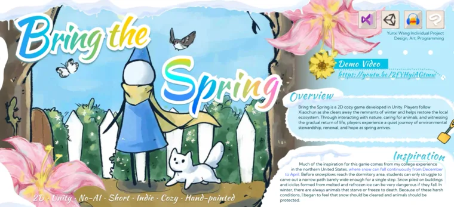

Chapter II · A Winter Miniature
Bring the Spring
In a town where it has snowed for a long time, the streetlamps and windows stay lit and the cats doze behind the curtain. Xiaochun tramps through the drifts: clearing snow, breaking icicles, shaking trees to catch what falls — carrying spring back one piece at a time. Underneath the quiet is a simple claim: people are part of nature, not visitors to it.
RoleSolo — code, art, animation, sound, writing
TechUnity · C# · particle systems
Size≈35 MB · loads faster than Inbetween · best on desktop
- Built the constant snowfall on Unity's particle system, so winter never stops falling
- Implemented the full set of interactions: tree-shaking and drop collection, snow digging, slingshot aiming to shatter icicles
- Ran 2 rounds of iteration on feedback from 4 playtesters

Design document · PDF
Six pages on where the game came from: inspiration, art direction, and how it was built. 9 MB.